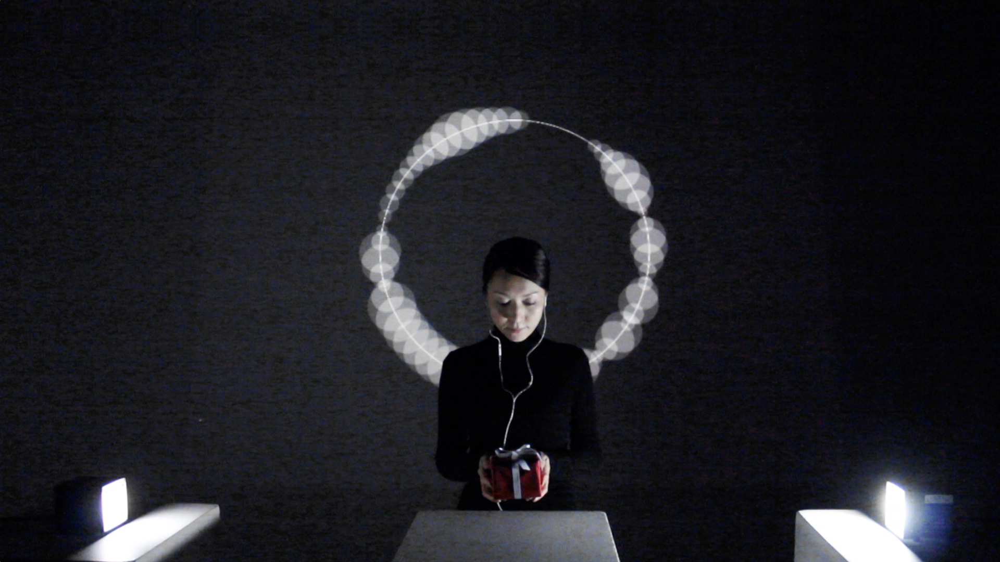

SYNC-X: Bio-Synchronical Communication
One of my challenges in the field of ART was to explore the borderless nature of human communication through the nature of body synchronicity. By applying the phenomenon of biosynchrony to my work, I tried to create a space where people from different countries, genders, religions, races, languages, cultures, ideologies, or generations could experience biosynchronous communication. My two major works, SyncDon II (2015) and SYNCROP (2017), used the phenomenon of Heartbeat Synchronization (HBS) as a medium of communication. SyncDon II was an attempt to create a form of emotional exchange between people by storing their heartbeats in a gift box. SYNCROP attempted to recontextualize our communicative perspective, which tended to be structured by the mind, through the HBS provided by the tunnel-like box. One of the main concerns behind my work was the question of whether consciousness took precedence over the body in our communication. My work confronted the mind-centered communication brought about by recent technology, which seemed to divide mind and body. I believed that by experiencing body-centered communication, we could gain a perspective on the healthy balance of human relationships.
As an artist, I was challenged to gain new insights and a deeper understanding of human communication with those who came into contact with my work.
SyncDon
Akihito Ito + Issey Takahashi (2013)
A media art installation, SyncDon, aimed to transmit emotions to others non-verbally through heartbeat synchronization. When someone sat on the sofa with the gift box in their hands, the box vibrated according to the heartbeats received from a person in the past. During the vibration, their heartbeat gradually synchronized with the vibration, and their circulation in the body became similar to that of the person who was the owner of the heartbeats. The assimilation of the body condition made them experience similar emotions to those felt by the person during the recording. This configuration was completely unique, as using heartbeat synchronization for sharing emotions was something nobody had ever tried. In addition, the method used for heartbeat collection was a distinctive feature of the work. It detected the heartbeat through clothing without any skin contact, which realized this special configuration of the work. We believed that "SyncDon" would bring us new sensations that we had never experienced before.
Video: https://vimeo.com/87774653
SyncDon II
Akihito Ito + Issey Takahashi (2015)

SyncDon II was an audiovisual installation that recorded the rhythm of a participant's heartbeat and collected it in a gift-wrapped box that pulsated with the recorded beats. The user was equipped with a specially designed headset sensor that read pulse waves while holding the pulsating box and feeling the beat of the person who had been there before. The heartbeat in the box and the heartbeat of the participant were visualized on a digital display monitor, where each heartbeat, seen as small circles, was displayed in real time and synchronized with each other. As they did so, the two circles merged into one, reflecting the actual synchronization occurring inside the body at that moment. The synchronization was induced not only by sound but also by visual cues, such as flashing lights timed to the beats and the tactile sensation of holding the pulsing box. The SyncDon II experience resulted in circulatory changes in the body as it adjusted to a new rhythm, and participation in the installation could evoke unexpected emotional responses that also affected heart rate variability and were therefore recorded. The synchronization led not only to an adjustment of the body's rhythms but also to empathy, the ability to share in another's emotional life and to feel what they felt.
Video: https://vimeo.com/120782580
SYNCROP
Issey Takahashi (2017)

A media art installation, SYNCROP, aimed to provide an opportunity to rethink one's perspective on human communication, questioning the role of the mind as an interpreter of sensory information for understanding a person interacting with you. SYNCROP consisted of a box tunnel, two dimming panels, LEDs, and Pulse Wave Sensors (PWS). Two pairs of PWS were placed at the sides of the box openings, and heartbeats were collected by touching them. The sheets changed from translucent to transparent, and the LEDs turned on when heartbeats were detected. As participants and their partners looked into the box with the hands-on sensors, each other's faces became visible when their heartbeats synchronized. The heartbeat synchronization was induced by the flashing rhythm of the lights and the leaves, which were correlated to the partner's heartbeat. In this context of the artwork, bodily synchronicity responded to the person in front of one’s mind. SYNCROP attempted to recontextualize one’s perspective on communication, which was often configured by the mind, by using the nature of bodily synchronicity.
Video: https://currentsnewmedia.org/work/syncrop/
Exhibition
I. Takahashi and A. Ito, “SyncDon II”, FILE 2018, São Paulo, Brazil, July 4 - August 12, 2018.
I. Takahashi and A. Ito, “SyncDon II”, 11th annual Meeting of the UNESCO Creative Cities Network in 2017, Saint-Etienne, France, September 14, 2017 – January 7, 2018.
I. Takahashi and A. Ito, “SyncDon II”, 11th annual Meeting of the UNESCO Creative Cities Network in 2017, CENTRE DES ARTS, Enghien-les-Bains, France, June 29 – July 17, 2017.
I. Takahashi, “SYNCROP”, CURRENTS NEW MEDIA 2017, Media Art Installation, El Museo Cultural de Santa Fe, NM, USA, June 9 – 25, 2017.
I. Takahashi and A. Ito, “SyncDon II: Bio-Synchronical Communication”, CURRENTS NEW MEDIA 2016, Media Art Installation, El Museo Cultural de Santa Fe, NM, USA, June 9 – 25, 2016.
高橋一誠，伊藤明倫，作品: SyncDon II，日本映像学会メディアアート研究会企画ー映像とメディアアート展「インターフェイスとしての映像と身体」, 愛知県立芸術大学芸術資料館, Aichi, Japan, September 9 - 24, 2017.
Artist Talk
I. Takahashi and A. Ito, “SyncDon II: Sharing of emotion by bio-synchronical communication”, 22nd International Symposium on Electronic Art, ISEA 2016, Artist talk, Hong Kong, 2016.
I. Takahashi and A. Ito, “SyncDon II: Bio-Synchronical Communication,” SIGGRAPH ASIA 2015, Art Paper, Session one: DEATH, Kobe Japan, 2015.
Publication
A. Ito and I. Takahashi, “SyncDon II,” FILE SÃO PAULO 2018 – O Corpo é a Mensagem, SESI-SP cultura, pp. 16-19, 2018. (ISBN: 978-85-89730-28-0)
A. Ito and I. Takahashi, “SyncDon II: Biosynchronical Communication,” DATA CITIES: The XIth Annual Meeting of UNESCO Creative Cities Network, pp186-191, 2017. (ISBN: 978-2-916639-44-4)
I. Takahashi and A. Ito, “SyncDon II : Bio-Synchronical Communication,” Proceedings of SIGGRAPH ASIA 2015, Art Papers, 5: 1-4, 2015. DOI: 10.1145/2835641.2835646